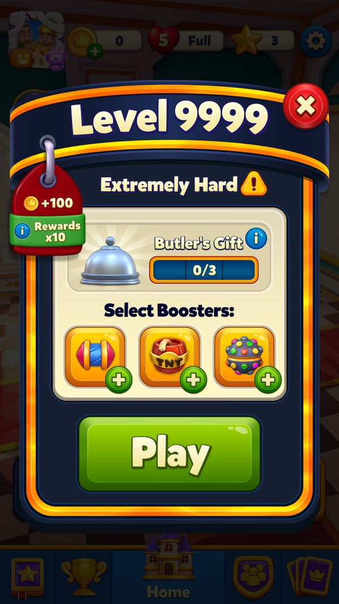
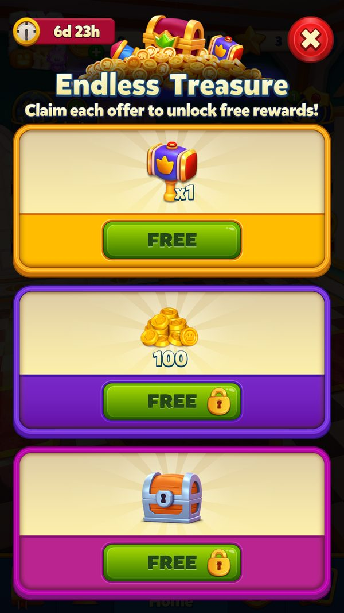
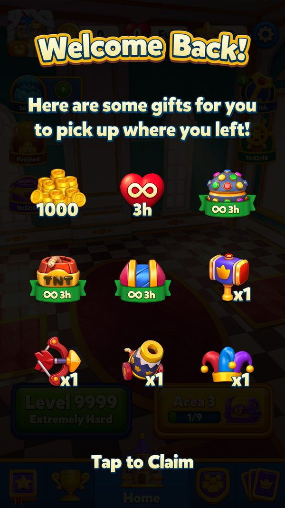
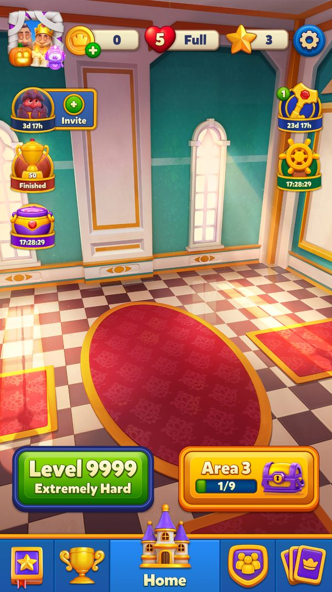

Phân tích phân tệp người chơi (User Segmentation) — Royal Match
Phân tệp: segment server, A/B, difficulty, đối xử từng tệp
Cách Royal Match chia người chơi thành tệp và đối xử khác nhau về giá, nội dung offer, độ khó, tính năng, quảng cáo. Phân tệp gần như toàn bộ do server quyết định; client chỉ nhận số bucket + version rồi ánh xạ. Nguồn: decompile + config live (ab_tests_runtime.json 52 test, PingResponse_ClientSettings.json 19 cờ, PingResponse_NewAbData.json).
- ✅ Giá trị thật: lấy thẳng từ code, config server thật, save hoặc ảnh chụp khi chơi.
- 🧪 Ví dụ minh họa: con số đầu vào giả định để thấy cơ chế chạy; cách tính trong ví dụ là cách tính thật trong code.
- Tên kỹ thuật (class, method, key) để trong ngoặc hoặc ở dòng bằng chứng, để tra code khi cần.
Ảnh chụp minh họa (6)
Ảnh cập nhật 09/10/2026: dùng ảnh playtest đã kiểm tra và ảnh mới chụp trong game offline. Config từ cache/default APK; EventId, deadline, progress hoặc AB có thể là fixture cục bộ. Chỉ chuỗi có đánh số và ghi trước/sau mới thuộc cùng phiên thao tác. Screenshot không chứng minh request server, analytics, thanh toán hay claim online. Save gốc khôi phục trước bỏ chặn mạng.









1. Các trục phân tệp (segmentation dimensions)
Royal Match không dùng enum tên sẵn "Free/Whale"; thay vào đó là nhiều bucket số nguyên song song, mỗi trục phục vụ một mục đích:
→ Một người chơi là giao của nhiều bucket cùng lúc. Server có thể thay bucket bất cứ lúc nào bằng cách bump version (client nhận ở ping/register và refresh).
| Trục | Trường (client) | Do server set | Dùng để | ||
|---|---|---|---|---|---|
| Offer segment | UserOfferSegment (int) + UserSegmentVersion | ✔ (refresh theo ServerSegmentVersion) | Chọn gói offer.N, chiến lược giá | ||
| Special offer segment | UserSpecialOfferSegment (int) | ✔ | Offer đặc biệt / giá nâng | ||
| Dynamic offer segment | DynamicOfferSegment (byte) + DynamicOfferUserSegmentVersion | ✔ | Gói dynamic.N server tự định nghĩa | ||
| Ladder offer segment | GetLadderOfferSegment() | ✔ | Chọn file `segmentedladder_offer_{3\ | 6}_{20\ | 50}` |
| Difficulty segment | bảng DynamicDifficultyEasy/Hard.json | ✔ (chọn Easy/Hard theo tệp) | Số nước mỗi ván (dễ/khó) | ||
| A/B group | NewAbData (52 test, group 1–6) | ✔ | Bật/tắt & biến thể tính năng, số nước (SLB), offer | ||
| Cohort new/old | hậu tố test _new_user / _old_user | ✔ | Rollout khác nhau cho người mới vs người cũ | ||
| Skill | UserSkill (3 bit), TryCount (7 bit) trong PreLevelInventory | tính từ hành vi | Điều chỉnh độ khó động (chỉ > L100) | ||
| Spending history | highestBoughtBundle/SinglePackage (BasicUserData.UserData) | từ hành vi mua | Ẩn gói nhỏ hơn, neo giá lên | ||
| League / progression | League (L1000), level hiện tại | từ tiến độ | Mở tính năng, leaderboard theo trình |
2. Cách gán tệp (assignment)
- Offer/segment: server trả UserOfferSegment, UserSpecialOfferSegment, DynamicOfferSegment + version qua PingResponse/UpdateUserProgressResponse. Client chỉ lưu và dùng; không tự quyết. Khi version server > version local → refresh (đây là cơ chế "đổi tệp nóng").
- A/B: NewAbData gán mỗi test một group 1–6 (live: 52 test đang chạy). Gán cố định theo người (persist để trải nghiệm nhất quán), chia theo cohort new/old user. Ví dụ test thực tế: reward_reduction_old_user (giảm thưởng người cũ), weekday_offer_old_user, ladder_offer_shop_card_old_user, supercharge_ab_old_user, superlightball_level_change_v2_new_user (đổi số nước người mới), merge_smith_new_user, early_kings_nightmare, age_consent_v5_new_user…
- Difficulty: chọn bảng Easy/Hard theo tệp + cập nhật skill/TryCount theo hành vi thua (chỉ khi level > 100 → người mới được tha).
- Spending: tự suy từ lịch sử mua (highestBought*) để neo giá — không cần server.
3. Đối xử theo tệp (treatment matrix)
Dù không có nhãn chính thức, cơ chế cho phép ánh xạ sang 4 tệp kinh điển:
Price discrimination thể hiện rõ ở 3 chiến lược giá (DefaultPricingStrategy / IncreasedPricePricingStrategy / LessContentPricingStrategy(V2)) chọn theo UserOfferSegment — cùng một slot, mỗi tệp thấy giá/nội dung khác nhau. Cộng với difficulty discrimination (Easy/Hard theo tệp) → vừa điều tiết trải nghiệm vừa tối đa hoá doanh thu theo khả năng chi.
| Tệp (suy luận) | Tín hiệu | Giá | Offer thấy | Độ khó | Quảng cáo |
|---|---|---|---|---|---|
| Free / Non‑payer | chưa mua (highestBought=0) | DefaultPricing; conversionoffer $0.99 phá rào | gói nhỏ, nhiều rewarded‑ad (free lives/coin) | Easy hơn (giữ chân) | Nhiều rewarded ad |
| Minnow (chi ít) | mua gói nhỏ | Default / đôi khi LessContent(V2) | ego offer, ladder bậc thấp, weekly pass | trung bình | vẫn có ad; No Ads chào bán |
| Dolphin (chi vừa) | mua bundle/pass đều | neo giá lên (ẩn gói nhỏ) | pass + bundle bậc giữa, journey/ladder đủ bậc | khó hơn (bán booster) | ít ad hơn (đã mua) |
| Whale (chi nhiều) | highestBought cao, mua liên tục | IncreasedPricePricingStrategy (gói đắt, nội dung nhiều) | dynamic/offer bậc $49–$99, teamoffer, worldcup cosmetic | khó + offer level cực khó | NoAdsBundleOverrideMaxCoinBoughtThreshold=5000 → gần như không chèn ad |
4. Bề mặt điều khiển live‑ops (control surface)
- 52 A/B test đang chạy (group 1–6) → bật/tắt tính năng, biến thể offer, số nước, rollout new/old. Cập nhật nóng qua ping, không cần bản mới.
- 19 ClientSettings flags (feature toggle hạ tầng): CloudflareEnabled, HttpDisabled, AppCheckEnabled, MaxLevelForBundle, SendDataOptimizationEnabled, NetworkMetricsEnabledFlag… → kiểm soát kỹ thuật & chống gian lận theo tệp/thiết bị.
- Config event theo version (*ConfigVersion) + SLB move config theo nhóm (CDN) → tinh chỉnh độ khó/nội dung theo nhóm tới từng level.
- Segment version bump = cơ chế "đổi tệp" trung tâm: nâng version ⇒ client xin lại gói/giá/offer phù hợp tệp mới.
5. Hệ quả & rủi ro
---
Hết bộ 4 bài phân tích. Dữ liệu cấu trúc chi tiết hơn: analysis/.json (22 bài), gdd/.json (82 feature).
- Mạnh: tối ưu doanh thu theo từng cá nhân, giữ chân người mới (Easy + ít rào), vắt whale (giá tăng, ít ad); thử nghiệm liên tục, an toàn (rollback bằng đổi group).
- Rủi ro: phân biệt giá/độ khó theo tệp nhạy cảm pháp lý & dư luận (một số thị trường siết); phụ thuộc server tuyệt đối (không tái lập offline); "reward_reduction_old_user" cho thấy sẵn sàng giảm thưởng người cũ — dễ gây bức xúc nếu bị phát hiện.
- Các giá trị bucket cụ thể (ngưỡng chi để lên tệp, ánh xạ segment→chiến lược giá) do server giữ, client chỉ có cơ chế → sẽ probe ở Phase 4 (liveops): đổi deviceId/userId xem gán A/B thế nào, segment version refresh ra gói gì.
Nguồn đã đọc
analysis_src/04-user-segmentation.md